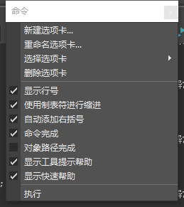

Maya 插件开发学习
- 环境配置
- vs code
- maya 脚本编辑器
- 语言分类
- mel
- python
- QT
环境配置
maya 脚本编辑器配置
如图所示，对脚本编辑器进行配置

vs code 环境配置
相关参考链接：
语言分类
mel
python
maya.cmds——这是一个把MEL命令用python包装（ wrappers）的库，可以用于替代MEL命令，因为绝大多数的MEL命令都能查找得到一一对应的maya.cmds命令。只适合面向过程编程。
pymel.core——该pymel库将许多最常用的MEL命令和API的方法重组到类的层次结构中，这样的设计让你的编程更简单易懂，更具有pythonic化，因为它是具有真正意义上的面向对象特性。由于该pymel库是第三方开发的，Autodesk公司并不提供技术上的支持帮助。
maya.OpenMaya——这是Maya C++ API的Python包装（ wrappers）的库，称之为Python API 1.0， 适合开发插件和需要MEL未公开的功能的其他任务。
maya.api.OpenMaya——这是Maya C++ API的Python包装（ wrappers）的库，称之为Python API 2.0。
QT
为了通用性，GUI选择QT。
关于本文
本文作者 Master Gong Sheng, 许可由 CC BY-NC 4.0.